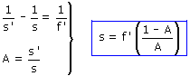
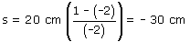

| Si la imagen está invertida el aumento lateral tiene que ser negativo, es decir A= -2, en contra de lo que dice el enunciado Datos: A = -2, f' = 20 cm Incógnitas: s', s Ecuaciones de la lente:  Sustituyendo los datos en estas expresiones:  El objeto deberá colocarse 30 cm a la izquierda de la lente, detrás del foco Construcción gráfica |